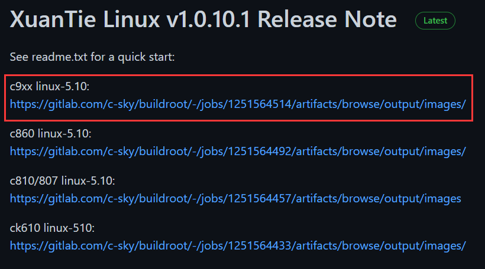

资料
Ubuntu下运行C910 Qemu
打开xuantie发行版页面：
https://github.com/c-sky/buildroot/releases
C910对应的版本是： c9xx linux-5.10
阅读readme.txt,这是官方给的使用手册。

参考 readme.txt -> Quick Start for qemu run 章节，模拟器包含在 toolchain_thead_xxx.tar.xz 中，一般解压到 host 目录下
echo "Download"
wget -nc https://gitlab.com/c-sky/buildroot/-/jobs/1251564514/artifacts/raw/output/images/toolchain_thead_9xx_compat_5.10_glibc_br_defconfig_5fe9fbd12ca3045d59a5d2e813f1c381327e6067.tar.xz
wget -nc https://gitlab.com/c-sky/buildroot/-/jobs/1251564514/artifacts/raw/output/images/Image.xz
wget -nc https://gitlab.com/c-sky/buildroot/-/jobs/1251564514/artifacts/raw/output/images/fw_jump.elf
wget -nc https://gitlab.com/c-sky/buildroot/-/jobs/1251564514/artifacts/raw/output/images/rootfs.ext2.xz
echo "Extra"
xz -d -k Image.xz
xz -d -k rootfs.ext2.xz
mkdir -p host
tar -Jxf toolchain_thead_9xx_compat_5.10_glibc_br_defconfig_5fe9fbd12ca3045d59a5d2e813f1c381327e6067.tar.xz -C host
echo "Run"
LD_LIBRARY_PATH=./host/lib ./host/csky-qemu/bin/qemu-system-riscv64 -M virt -kernel fw_jump.elf -device loader,file=Image,addr=0x80200000 -append "rootwait root=/dev/vda ro" -drive file=rootfs.ext2,format=raw,id=hd0 -device virtio-blk-device,drive=hd0 -nographic -smp 1
(Login with username "root", and no password)
参数解析
LD_LIBRARY_PATH=./host/lib: 增加指定运行库qemu-system-riscv64: RISC-V QEMU 可执行命令-M virt: QEMU 标准，指定板型号，这里是 virt machine-kernel fw_jump.elf: 指定 RISC-V Opensbi 为加载程序，此为 RISC-V QEMU 标准-device loader,file=Image,addr=0x80200000: QEMU 标准 loader 设备，将 Image 文件，加载到 0x80200000 处-append "rootwait root=/dev/vda ro": 指定 linux cmdline-drive file=rootfs.ext2,format=raw,id=hd0: 指定 rootfs.ext2 为磁盘设备，对应 cmdline 中 root=/dev/vda 设置该设备为根文件系统-device virtio-blk-device,drive=hd0: 同上确定 -drive 中 id=hd0 的具体设备类型-nographic: 禁用图形 framebuffer-smp 1: 指定 cpu 数量